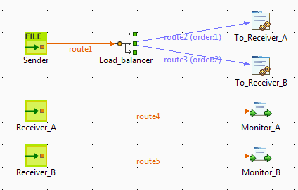
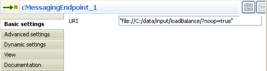
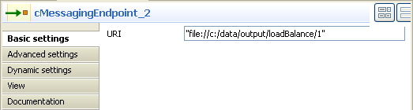
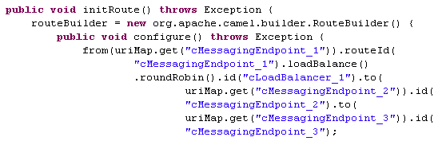
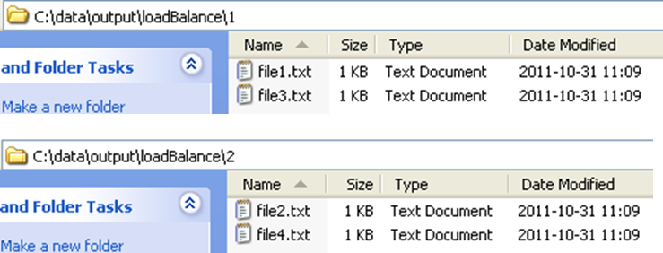

Component Family | Routing | |
Function | cLoadBalancer allows you to distribute messages across multiple endpoints using different load balancing strategies. | |
Purpose | cLoadBalancer allows you to distribute messages among several endpoints using a variety of load balancing strategies. | |
Basic settings | Strategy | Select between Random, Round Robin, Sticky, Topic, Failover, and Custom. Each method is described below. |
Random | The receiving endpoint is chosen randomly at each exchange. | |
Round Robin | Messages are distributed according to the round robin method which distributes the load evenly. | |
Sticky | Language | Select the language of the expression to use in the Expression field to distribute the messages. |
| Expression | Type in the expression that will be used to calculate a correlation key that will determine the endpoint to choose. |
Topic | Select this option to send all the messages to all the endpoints. | |
Failover | Basic mode | By default, the failover load balancing always sends the messages to the first endpoint. If the first endpoint fails, the messages are sent to subsequent endpoints. |
| Specify exceptions | Specify the exceptions to which the failover should react to in the Exception table. |
| Use with Round robin | Select this option to use failover with advanced options. From the Maximum failover attempt list, select the number of attempt to be proceed before giving up the transfer: -Attempt forever: always attempts to transfer the messages and always try to failover. -Never failover: gives up immediately the transfer of messages and never try to failover. -A number of attempts: attempts n number of time to transfer messages, specify that number in the Number of attempts field. Inherit error handler: Select true if you want Camel error handler to be used. If you select false, the load balancer will immediately failover when an exception is thrown. Use Round robin: Select true if you want to combine failover with round robin. Failover load balancing with round robin mode distributes the load evenly between the services, and it provides automatic failover. |
Custom | Load balancer | Type in the name of your custom load balancer. |
Usage | cLoadBalancer is used as a middle component in a Route. | |
Limitation | n/a | |
In this scenario, cLoadBalancer is deployed to distribute four messages evenly among two receiving endpoints in accordance with the round robin load balancing policy.
Drag and drop the components from the Palette to the workspace: cMessagingEndpoint (X3) and cLoadBalancer.
Link the first cMessagingEndpoint component to cLoadBalancer using a Row > Route connection.
Link cLoadBalancer to the two other cMessagingEndpoint components using a Row > Load Balance connection.
Double click the first cMessagingEndpoint component to open its Basic Settings view in the Component tab.
In the URI field, enter the URI of the source messages and relevant arguments, e.g. "file://C:/data/input/loadBalance/?noop=true", where the argument ?noop=true means that no operation will be made on the source messages.
Double click cLoadBalancer to open its Basic Settings view in the Component tab.

Select Round robin from the Strategy list.
Double-click the second cMessagingEndpoint component to open its Basic Settings view in the Component tab.
In the URI field, enter the URI of the destination for the messages, e.g. "file://c:/data/output/loadBalance/1".
Double-click the third cMessagingEndpoint component to open its Basic Settings view in the Component tab.

In the URI field, enter the URI of the destination for the messages, e.g. "file://c:/data/output/loadBalance/2".
Click the Code tab at the bottom of the design workspace to check the generated code:
As shown above, while messages are routed
.fromthe source endpoint.tothe destination endpoints, routing load balancing is implemented by.loadBalance()according to the.roundRobin()strategy.Save the Route and press F6 to run it.
You can find that message 1 and message 3 are received in the folder C:\data\output\loadBalance\1 while message 2 and message 4 are received in the folder C:\data\output\loadBalance\2.
